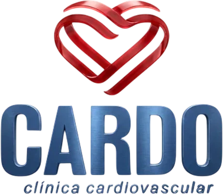
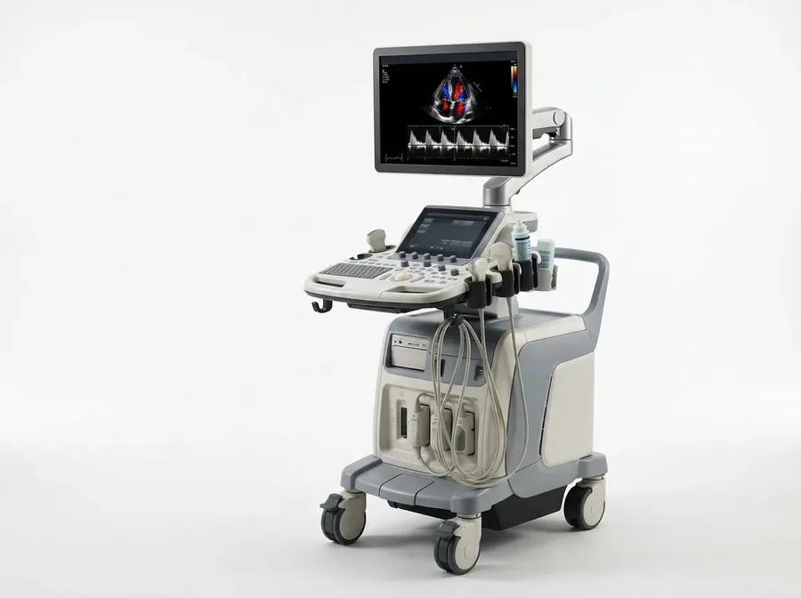
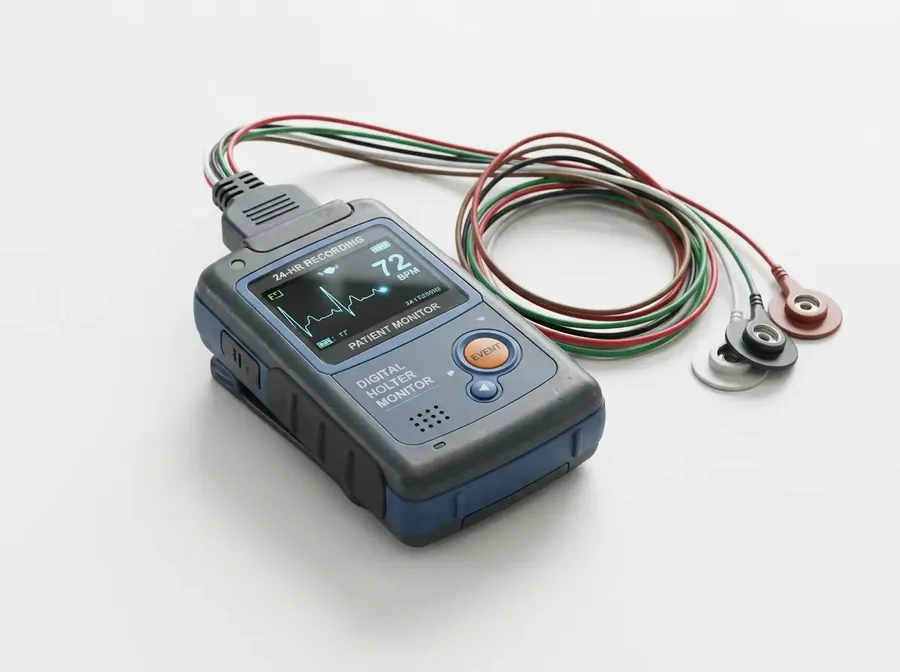
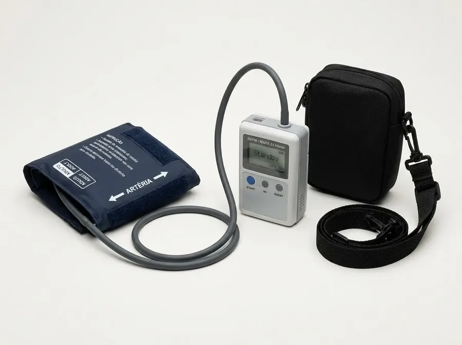
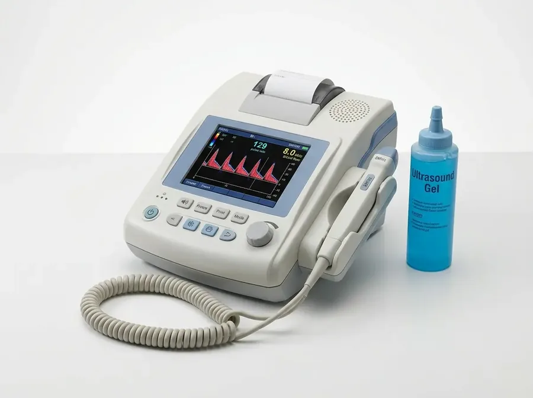

A união do rigor científico da Cardiologia Clínica e da vanguarda minimamente invasiva da Cirurgia Vascular em Itabuna, Bahia. Consultas sem pressa e diagnósticos completos no local.
Consultas com tempo de escuta estendido e avaliação minuciosa sem a pressa dos convênios.
Cardiologia e Cirurgia Vascular compartilhando diagnósticos imediatos sob o mesmo teto.
Coração e circulação não funcionam separados, e o seu cuidado também não deveria. Na Cardo Clínica, a avaliação do coração e o tratamento das doenças vasculares caminham juntos, em uma conversa contínua entre especialistas. O resultado é uma conduta pensada para você, com discussões clínicas ágeis e um plano de cuidado que respeita a sua história.
Discussão multidisciplinar contínua entre cardiologista e cirurgião vascular sem fragmentação do cuidado.
Procedimentos modernos para varizes com Endolaser e Laser Transdérmico com recuperação rápida e sem cortes.
Ecocardiograma, Doppler Vascular, Holter e MAPA 24h realizados e laudados diretamente no consultório.
Da prevenção e diagnóstico precoce aos procedimentos vasculares minimamente invasivos e exames completos realizados no próprio consultório.
Tratamento integrado que conecta prevenção cardiológica, cirurgia vascular de vanguarda e diagnóstico imediato em um único espaço no Itabuna Trade Center.
Manejo de hipertensão arterial, insuficiência cardíaca, arritmias, avaliação minuciosa de risco cirúrgico e acompanhamento preventivo.
Tratamento moderno de varizes e vasinhos com Laser Transdérmico, Endolaser e Espuma. Prevenção de AVC (doença carotídea) e tratamento de trombose.
Ecocardiograma Transtorácico, Doppler Vascular de Carótidas e Membros, Holter 24 horas e MAPA 24h realizados diretamente pelos especialistas.
Cada paciente tem seu caso estudado com profundidade e rigor metodológico. Os exames complementares necessários podem ser realizados no próprio consultório, economizando seu tempo e evitando deslocamentos.
Antes de falar de títulos, vale falar do essencial: aqui você é recebido por médicos que escolheram a escuta como método. Por trás de cada consulta existe formação médica sólida, residência formal e títulos de especialista registrados no CREMEB. E tudo isso é aplicado da forma que mais importa para você, com acolhimento, atenção individualizada e o tempo que cada caso pede, na Cardo Clínica Cardiovascular.
Cardiologista Clínica & Ecocardiografista
Uma consulta que começa pela escuta. A Dra. Eulina acredita que o coração se cuida com rigor técnico e com calma: exame clínico cardiológico aprofundado, investigação diagnóstica na medida certa e uma conversa clara sobre cada passo do tratamento. Atendimento humanizado e individualizado, seguindo as diretrizes da Sociedade Brasileira de Cardiologia.
Cirurgião Vascular & Ecografista Vascular
O cuidado com as pernas começa muito antes de qualquer procedimento. O Dr. João avalia cada caso com atenção individualizada, investiga a circulação com os exames certos e explica as opções com clareza, da prevenção aos tratamentos mais específicos, como laser, escleroterapia e cirurgia vascular. Atendimento humanizado, baseado nas diretrizes da SBACV.
Agilidade e segurança: saia da consulta com seu exame cardiológico ou vascular agendado ou realizado diretamente no mesmo local.
Saiba mais →
Ultrassonografia com Doppler para avaliação anatômica e funcional das câmaras cardíacas e válvulas em tempo real.
Registro elétrico do ritmo e da frequência dos batimentos para triagem de arritmias e risco cirúrgico.

Gravação contínua dos batimentos cardíacos durante a rotina do paciente para diagnóstico de palpitações e síncopes.

Monitorização ambulatorial da pressão arterial ao longo do dia e do sono para ajuste rigoroso de anti-hipertensivos.

Mapeamento venoso e arterial das pernas para planejamento cirúrgico de varizes e diagnóstico de trombose (TVP).
Avaliação da irrigação cerebral e detecção de placas ateroscleróticas para prevenção assertiva de AVC.